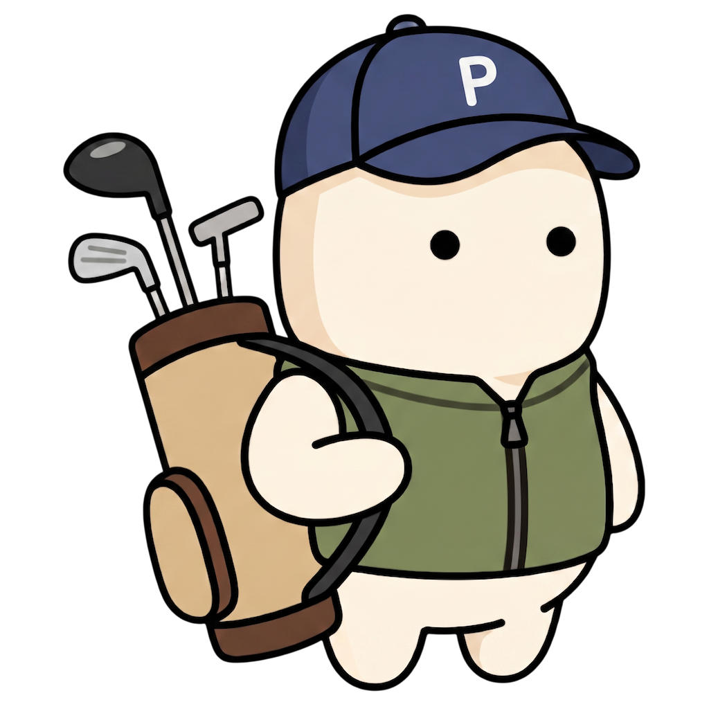
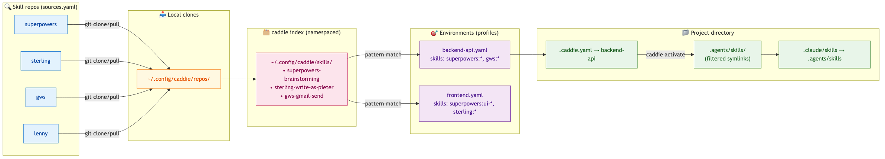

Like a golf caddie handing you the right club — without you asking.
caddie scans many skill repos, indexes them under one namespace, and activates a curated subset per project — as symlinks.
Same laptop. Same Claude. Different toolkit per directory.
Git repos registered in sources.yaml. Auto-cloned, auto-pulled.
One namespaced view of every skill. prefix:name, e.g. superpowers:brainstorming.
YAML profiles with glob patterns: superpowers:*, gws:gmail-*.
Drop a .caddie.yaml in a project. caddie activate wires up the rest.

$ caddie activate.caddie.yamlProject tells caddie which environment to load.
Auto-throttled — at most once per hour.
Symlinks under ~/.config/caddie/skills/, namespaced.
superpowers:* → 22 skills, gws:gmail-* → 3 skills...
.claude/skills ready. Launch Claude.
$ cd ~/Dev/backend-api $ caddie activate ✓ Backend API Skills: 30 active
$ cd ~/Dev/marketing-site $ caddie activate ✓ Frontend Skills: 18 active
Same Claude. Two completely different sets of skills — activated by cd.
caddie export resolves every symlink and copies real SKILL.md files —
to a folder or straight to S3.
→ Docker · Lambda · ECS · CI/CD
# local dir caddie export backend-api \ --to ./dist/skills/ # straight to S3 caddie export backend-api \ --to s3://my-bucket/skills/
caddie repo list · caddie inventory · caddie activate · caddie which
brew install go · clone caddie · ./scripts/build.sh · copy to /usr/local/bin/caddie init — backs up ~/.claude/skills/ and sets things up.caddie repo add superpowers https://github.com/Portauw/superpowers.gitcaddie create my-project (interactive)environment: my-project in .caddie.yaml · run caddie activate
Read more → README.md · docs/OVERVIEW.md · examples/
github.com/Portauw/caddie · pieter.portauw@inthepocket.com